CODING AGENTS AS PIXEL WORLD MODELS
traex/DeepSeek-V4.1-Flash · dynamic_spatial_relationship_0055
点击播放 · 原生 RGB 像素
逐轮保存的候选
回放视频、检查图与代码变化。
每份候选均可单独播放。实际图片检查记录在下方工具轨迹中。
候选 01播放与检查图
点击播放 · 原生 RGB 像素

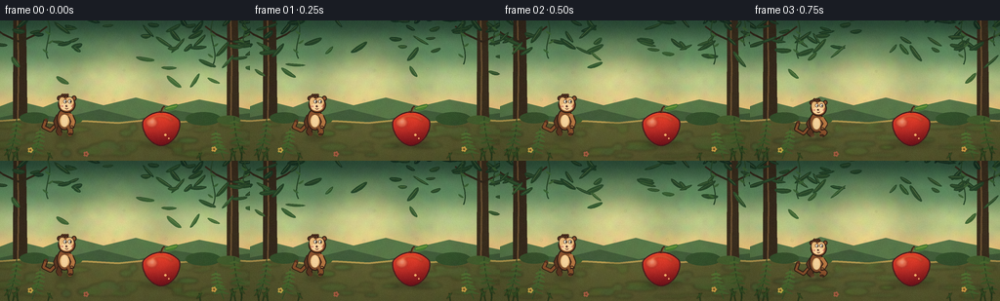
展开代码变化
--- 上一保存版本
+++ 本次保存版本
@@ -0,0 +1,663 @@
+from pathlib import Path
+import math
+
+import numpy as np
+from PIL import Image, ImageChops, ImageDraw, ImageFilter
+
+import artifact_io
+
+
+WIDTH = 256
+HEIGHT = 144
+FRAMES = 20
+FPS = 4
+SS = 4
+CW = WIDTH * SS
+CH = HEIGHT * SS
+
+
+def sc(value):
+ return int(round(value * SS))
+
+
+def point(x, y):
+ return (sc(x), sc(y))
+
+
+def box(x0, y0, x1, y1):
+ return (sc(x0), sc(y0), sc(x1), sc(y1))
+
+
+def smoothstep(value):
+ value = max(0.0, min(1.0, value))
+ return value * value * (3.0 - 2.0 * value)
+
+
+def mix(a, b, t):
+ return tuple(int(a[i] * (1.0 - t) + b[i] * t) for i in range(3))
+
+
+def cubic_points(p0, p1, p2, p3, count=40):
+ values = []
+ for index in range(count + 1):
+ t = index / count
+ u = 1.0 - t
+ x = u**3 * p0[0] + 3 * u * u * t * p1[0] + 3 * u * t * t * p2[0] + t**3 * p3[0]
+ y = u**3 * p0[1] + 3 * u * u * t * p1[1] + 3 * u * t * t * p2[1] + t**3 * p3[1]
+ values.append(point(x, y))
+ return values
+
+
+def polygon_from_cubics(segments, samples=30):
+ result = []
+ for p0, p1, p2, p3 in segments:
+ chunk = cubic_points(p0, p1, p2, p3, samples)
+ if result:
+ chunk = chunk[1:]
+ result.extend(chunk)
+ return result
+
+
+def leaf_polygon(cx, cy, rx, ry, angle, count=18):
+ result = []
+ for index in range(count):
+ theta = 2.0 * math.pi * index / count
+ x = rx * math.cos(theta)
+ y = ry * math.sin(theta) * (0.78 + 0.22 * math.sin(theta))
+ ca = math.cos(angle)
+ sa = math.sin(angle)
+ result.append(point(cx + x * ca - y * sa, cy + x * sa + y * ca))
+ return result
+
+
+def line_with_outline(draw, points, fill, outline, inner_width, outer_width=None):
+ if outer_width is None:
+ outer_width = inner_width + 2.4
+ draw.line(points, fill=outline, width=max(1, round(sc(outer_width))), joint="curve")
+ draw.line(points, fill=fill, width=max(1, round(sc(inner_width))), joint="curve")
+ radius = sc(inner_width * 0.50)
+ for x, y in (points[0], points[-1]):
+ draw.ellipse((x - radius, y - radius, x + radius, y + radius), fill=fill)
+
+
+def blurred_layer(draw_fn, blur=5):
+ layer = Image.new("RGBA", (CW, CH), (0, 0, 0, 0))
+ draw_fn(ImageDraw.Draw(layer))
+ if blur:
+ layer = layer.filter(ImageFilter.GaussianBlur(sc(blur)))
+ return layer
+
+
+def vertical_gradient(stops):
+ rows = np.zeros((CH, 3), dtype=np.float32)
+ for y in range(CH):
+ py = y / SS
+ for index in range(len(stops) - 1):
+ y0, color0 = stops[index]
+ y1, color1 = stops[index + 1]
+ if y0 <= py <= y1:
+ t = smoothstep((py - y0) / max(0.001, y1 - y0))
+ rows[y] = np.array(color0) * (1 - t) + np.array(color1) * t
+ break
+ else:
+ rows[y] = stops[-1][1]
+ return np.repeat(rows[:, None, :], CW, axis=1).astype(np.uint8)
+
+
+def add_texture(canvas, rng):
+ small = rng.normal(0.0, 1.0, (24, 42, 3)).astype(np.float32)
+ noise = Image.fromarray(np.uint8(np.clip(128 + small * 26, 0, 255)))
+ noise = noise.resize((CW, CH), Image.Resampling.BICUBIC).filter(ImageFilter.GaussianBlur(SS * 1.2))
+ noise_array = np.asarray(noise).astype(np.float32) / 128.0
+ base = np.asarray(canvas).astype(np.float32)
+ base[:, :, :3] = np.clip(base[:, :, :3] * (0.92 + noise_array * 0.08), 0, 255)
+ return Image.fromarray(np.uint8(base), "RGBA")
+
+
+def draw_background(rng, frame_index):
+ gradient = vertical_gradient(
+ [
+ (0, (49, 85, 62)),
+ (30, (99, 143, 99)),
+ (64, (189, 203, 139)),
+ (91, (242, 205, 132)),
+ (108, (119, 128, 72)),
+ (144, (48, 57, 33)),
+ ]
+ )
+ canvas = Image.fromarray(gradient).convert("RGBA")
+
+ # Warm opening in the canopy.
+ glow = blurred_layer(
+ lambda d: d.ellipse(box(67, 21, 170, 111), fill=(255, 230, 153, 106)),
+ blur=18,
+ )
+ canvas.alpha_composite(glow)
+
+ # Layered distant hills and tree trunks.
+ draw = ImageDraw.Draw(canvas)
+ draw.polygon(
+ [point(-8, 91), point(16, 82), point(44, 89), point(72, 78), point(106, 87),
+ point(139, 79), point(174, 88), point(204, 81), point(265, 93), point(265, 122),
+ point(-8, 122)],
+ fill=(88, 119, 73, 255),
+ )
+ draw.polygon(
+ [point(-8, 101), point(26, 94), point(63, 100), point(102, 91), point(142, 101),
+ point(179, 92), point(222, 99), point(265, 94), point(265, 126), point(-8, 126)],
+ fill=(66, 92, 58, 255),
+ )
+
+ for x, width, tint in [(20, 13, (55, 43, 29)), (238, 11, (60, 47, 31))]:
+ draw.polygon(
+ [point(x - width / 2, 0), point(x + width / 2, 0),
+ point(x + width * 0.62, 105), point(x - width * 0.52, 105)],
+ fill=(*tint, 255),
+ )
+ draw.line(
+ [point(x - width * 0.18, 0), point(x - width * 0.10, 48), point(x - width * 0.16, 101)],
+ fill=(115, 87, 53, 150),
+ width=sc(1.4),
+ )
+ for side in (-1, 1):
+ draw.line(
+ [point(x, 22), point(x + side * 17, 14), point(x + side * 28, 6)],
+ fill=(53, 43, 29, 230),
+ width=sc(2.0),
+ )
+
+ # Ground bands with hand-shaped moss islands.
+ ground_top = [(0, 103), (25, 101), (54, 105), (86, 103), (121, 105),
+ (151, 102), (186, 104), (221, 101), (256, 103)]
+ draw.polygon(
+ [point(x, y) for x, y in ground_top] + [point(256, 144), point(0, 144)],
+ fill=(91, 92, 48, 255),
+ )
+ draw.line(
+ [point(x, y) for x, y in ground_top],
+ fill=(174, 150, 78, 205),
+ width=sc(2.1),
+ joint="curve",
+ )
+
+ moss_layer = Image.new("RGBA", (CW, CH), (0, 0, 0, 0))
+ moss_draw = ImageDraw.Draw(moss_layer)
+ for _ in range(34):
+ x = rng.uniform(4, 252)
+ y = rng.uniform(106, 140)
+ rx = rng.uniform(4, 17)
+ ry = rng.uniform(1.3, 4.5)
+ color = (73 + int(rng.uniform(-10, 16)), 104 + int(rng.uniform(-12, 14)),
+ 47 + int(rng.uniform(-8, 11)), int(rng.uniform(60, 130)))
+ moss_draw.ellipse(box(x - rx, y - ry, x + rx, y + ry), fill=color)
+ canvas.alpha_composite(moss_layer.filter(ImageFilter.GaussianBlur(sc(1.2))))
+
+ # Distant undergrowth.
+ for x, y, r, color in [
+ (35, 101, 15, (55, 83, 45, 210)),
+ (73, 103, 11, (64, 94, 49, 205)),
+ (208, 102, 18, (52, 81, 44, 220)),
+ (234, 103, 12, (70, 97, 47, 200)),
+ ]:
+ draw.ellipse(box(x - r, y - r * 0.45, x + r, y + r * 0.30), fill=color)
+
+ # Canopy leaves are arranged in clusters, with a small breeze offset.
+ sway = 0.7 * math.sin(frame_index * 0.72)
+ clusters = []
+ for _ in range(56):
+ side_bias = rng.random()
+ if side_bias < 0.50:
+ x = rng.uniform(-7, 112)
+ else:
+ x = rng.uniform(145, 264)
+ y = rng.uniform(-7, 31) if rng.random() < 0.78 else rng.uniform(18, 64)
+ clusters.append((x + sway * (y + 6) / 30, y, rng.uniform(4.5, 10.5),
+ rng.uniform(1.7, 3.5), rng.uniform(-1.0, 1.0)))
+ clusters.sort(key=lambda item: item[1])
+ for x, y, rx, ry, angle in clusters:
+ depth = y / 65.0
+ color = mix((26, 55, 37), (82, 126, 61), min(1.0, depth * 0.75 + rng.uniform(-0.1, 0.1)))
+ draw.polygon(leaf_polygon(x, y, rx, ry, angle), fill=(*color, 245))
+ draw.line(
+ [point(x - rx * 0.65 * math.cos(angle), y - rx * 0.65 * math.sin(angle)),
+ point(x + rx * 0.65 * math.cos(angle), y + rx * 0.65 * math.sin(angle))],
+ fill=(*mix(color, (196, 209, 116), 0.30), 150),
+ width=sc(0.55),
+ )
+
+ # Hanging vines.
+ for x, length, bend in [(49, 39, 6), (218, 45, -7), (250, 26, 4)]:
+ points = cubic_points(
+ (x, 0), (x + bend, length * 0.36), (x - bend, length * 0.70), (x + sway, length), 30
+ )
+ draw.line(points, fill=(43, 75, 44, 230), width=sc(1.2), joint="curve")
+ for j in range(3):
+ yy = length * (0.32 + j * 0.24)
+ xx = x + math.sin(j * 2.1) * 3 + sway
+ draw.polygon(leaf_polygon(xx, yy, 3.2, 1.3, -0.6 if j % 2 else 0.6), fill=(62, 103, 54, 225))
+
+ # Ferns frame the action without covering either subject.
+ def fern(base_x, base_y, height, direction, tint):
+ stem = cubic_points(
+ (base_x, base_y),
+ (base_x + direction * 4, base_y - height * 0.35),
+ (base_x + direction * 9, base_y - height * 0.73),
+ (base_x + direction * 8, base_y - height),
+ 22,
+ )
+ draw.line(stem, fill=(*tint, 230), width=sc(1.05), joint="curve")
+ for j in range(6):
+ t = 0.24 + j * 0.125
+ idx = min(len(stem) - 1, int(t * (len(stem) - 1)))
+ px, py = stem[idx]
+ px /= SS
+ py /= SS
+ spread = 6.5 * (1.0 - t * 0.55)
+ for side in (-1, 1):
+ draw.polygon(
+ leaf_polygon(px + side * spread * 0.48, py, spread, 1.25,
+ side * (0.34 + direction * 0.06)),
+ fill=(*mix(tint, (126, 154, 66), 0.25 + j * 0.035), 225),
+ )
+
+ fern(9, 141, 40, 1, (44, 75, 38))
+ fern(33, 142, 31, 1, (55, 89, 43))
+ fern(248, 141, 42, -1, (44, 74, 36))
+ fern(229, 142, 29, -1, (61, 95, 45))
+
+ # A few restrained color accents in the undergrowth.
+ for x, y, color in [(31, 133, (219, 182, 78)), (219, 132, (221, 169, 76)),
+ (88, 137, (179, 101, 72))]:
+ draw.line([point(x, y + 3), point(x, y)], fill=(56, 84, 40, 230), width=sc(0.9))
+ for k in range(5):
+ angle = k * 2 * math.pi / 5
+ draw.ellipse(
+ box(x + math.cos(angle) * 1.8 - 1.1, y + math.sin(angle) * 1.8 - 1.1,
+ x + math.cos(angle) * 1.8 + 1.1, y + math.sin(angle) * 1.8 + 1.1),
+ fill=(*color, 235),
+ )
+ draw.ellipse(box(x - 0.8, y - 0.8, x + 0.8, y + 0.8), fill=(103, 74, 35, 255))
+
+ canvas = add_texture(canvas, rng)
+ return canvas
+
+
+def draw_monkey(canvas, cx, cy, scale, pose, tail_phase=0.0):
+ draw = ImageDraw.Draw(canvas)
+ outline = (48, 31, 22, 255)
+ fur_dark = (92, 55, 34, 255)
+ fur = (139, 82, 45, 255)
+ fur_light = (181, 119, 66, 255)
+ face = (231, 183, 119, 255)
+ face_light = (247, 212, 157, 255)
+ pink = (161, 92, 70, 255)
+
+ def rel(x, y):
+ return point(cx + x * scale, cy + y * scale)
+
+ def rbox(x0, y0, x1, y1):
+ return box(cx + x0 * scale, cy + y0 * scale, cx + x1 * scale, cy + y1 * scale)
+
+ def rline(points, fill, outline_color, inner, outer=None):
+ line_with_outline(
+ draw,
+ [rel(x, y) for x, y in points],
+ fill,
+ outline_color,
+ inner * scale,
+ (inner + 2.0) * scale if outer is None else outer * scale,
+ )
+
+ # Tail is drawn first and changes shape between standing, flight, and peek poses.
+ if pose == "jump":
+ tail = [(-7, 3), (-17, 12), (-25, 1), (-22, -12)]
+ elif pose in ("crouch", "land"):
+ tail = [(-7, 4), (-16, 13), (-25, 8), (-22, -1)]
+ elif pose == "peek":
+ tail = [(-5, 4), (-15, 13), (4, 17), (21, 3 + 2 * math.sin(tail_phase))]
+ else:
+ tail = [(-7, 3), (-16, 12), (-24, 8), (-21, 0 + 1.4 * math.sin(tail_phase))]
+ tail_points = [rel(x, y) for x, y in tail]
+ line_with_outline(draw, tail_points, fur, outline, 2.7 * scale, 4.7 * scale)
+ draw.ellipse(
+ (tail_points[-1][0] - sc(1.8 * scale), tail_points[-1][1] - sc(1.8 * scale),
+ tail_points[-1][0] + sc(1.8 * scale), tail_points[-1][1] + sc(1.8 * scale)),
+ fill=fur_dark,
+ )
+
+ # Far limbs.
+ if pose == "jump":
+ far_arm = [(-6, -6), (-13, -12), (-17, -21)]
+ far_leg = [(-5, 8), (-11, 12), (-7, 16)]
+ elif pose == "crouch":
+ far_arm = [(-6, -5), (-10, 1), (-7, 7)]
+ far_leg = [(-5, 8), (-9, 12), (-5, 15)]
+ elif pose == "land":
+ far_arm = [(-7, -5), (-11, 2), (-8, 8)]
+ far_leg = [(-5, 8), (-9, 13), (-4, 15)]
+ else:
+ far_arm = [(-7, -5), (-10, 2), (-8, 8)]
+ far_leg = [(-5, 8), (-7, 13), (-5, 16)]
+ rline(far_arm, fur_dark, outline, 4.1)
+ rline(far_leg, fur_dark, outline, 4.7)
+
+ # Torso and belly.
+ draw.ellipse(rbox(-9.0, -13.2, 9.0, 11.8), fill=fur, outline=outline, width=sc(1.15))
+ draw.ellipse(rbox(-6.0, -7.0, 6.0, 9.0), fill=face, outline=(111, 70, 43, 220), width=sc(0.65))
+ draw.ellipse(rbox(-3.7, -5.5, 3.7, 7.6), fill=face_light)
+
+ # Near leg.
+ if pose == "jump":
+ near_leg = [(5, 8), (11, 12), (8, 16)]
+ elif pose == "crouch":
+ near_leg = [(5, 8), (10, 12), (6, 15)]
+ elif pose == "land":
+ near_leg = [(5, 8), (10, 13), (5, 15)]
+ else:
+ near_leg = [(5, 8), (7, 13), (6, 16)]
+ rline(near_leg, fur, outline, 5.0)
+ foot_x, foot_y = near_leg[-1]
+ draw.ellipse(rbox(foot_x - 2.2, foot_y - 1.1, foot_x + 3.1, foot_y + 1.6),
+ fill=fur_dark, outline=outline, width=sc(0.8))
+
+ # Head, ears, and a soft three-quarter monkey face.
+ draw.ellipse(rbox(-8.5, -27.8, -2.8, -21.8), fill=fur_dark, outline=outline, width=sc(0.9))
+ draw.ellipse(rbox(8.0, -27.8, 13.5, -21.8), fill=fur, outline=outline, width=sc(0.9))
+ draw.ellipse(rbox(-7.5, -27.0, 12.5, -8.0), fill=fur, outline=outline, width=sc(1.15))
+ draw.ellipse(rbox(-6.1, -25.8, 0.9, -15.2), fill=face)
+ draw.ellipse(rbox(0.7, -25.8, 10.2, -15.2), fill=face)
+ draw.ellipse(rbox(-4.4, -19.5, 9.0, -10.8), fill=face_light)
+
+ # Hair tuft.
+ for offset, angle in [(-2.8, -0.22), (0.0, 0.0), (2.6, 0.20)]:
+ rline([(offset - 1.0, -26.8), (offset + 1.2, -29.1)], fur_dark, outline, 1.4)
+ _ = angle
+
+ # Eyes and expression. Pupils look toward the apple during the first beat.
+ for ex in (0.5, 6.0):
+ draw.ellipse(rbox(ex - 2.0, -23.4, ex + 2.0, -19.0), fill=(250, 241, 214, 255),
+ outline=(73, 45, 31, 230), width=sc(0.55))
+ draw.ellipse(rbox(ex + 0.1, -22.1, ex + 1.9, -20.1), fill=(31, 25, 21, 255))
+ draw.ellipse(rbox(ex + 0.65, -21.9, ex + 1.35, -21.2), fill=(255, 255, 244, 255))
+
+ draw.ellipse(rbox(1.0, -17.0, 3.4, -14.8), fill=(75, 43, 34, 255))
+ draw.ellipse(rbox(2.6, -16.7, 3.5, -15.7), fill=(206, 153, 115, 255))
+ mouth_points = [
+ point(cx + 0.8 * scale, cy - 13.2 * scale),
+ point(cx + 2.4 * scale, cy - 12.3 * scale),
+ point(cx + 4.1 * scale, cy - 13.4 * scale),
+ ]
+ draw.line(mouth_points, fill=(111, 57, 44, 255), width=sc(0.8), joint="curve")
+ draw.ellipse(rbox(-3.7, -16.6, -1.7, -14.7), fill=(213, 129, 107, 95))
+ draw.ellipse(rbox(7.6, -16.6, 9.6, -14.7), fill=(213, 129, 107, 95))
+
+ # Near arm.
+ if pose == "jump":
+ near_arm = [(7, -6), (14, -12), (17, -21)]
+ elif pose == "crouch":
+ near_arm = [(7, -5), (11, 1), (7, 7)]
+ elif pose == "land":
+ near_arm = [(7, -5), (12, 2), (8, 8)]
+ else:
+ near_arm = [(7, -5), (10, 2), (8, 8)]
+ rline(near_arm, fur_light, outline, 4.3)
+ hand_x, hand_y = near_arm[-1]
+ draw.ellipse(rbox(hand_x - 2.0, hand_y - 1.7, hand_x + 2.2, hand_y + 1.5),
+ fill=fur_light, outline=outline, width=sc(0.75))
+
+ # Fingertip separations keep the hands legible at video resolution.
+ for delta in (-0.8, 0.2, 1.2):
+ rline([(hand_x + delta, hand_y + 0.6), (hand_x + delta + 0.3, hand_y + 1.8)],
+ fur_dark, outline, 0.65)
+
+
+def draw_apple(canvas, cx, cy):
+ draw = ImageDraw.Draw(canvas)
+ half_w = 20.0
+ half_h = 17.5
+ top = cy - half_h
+ bottom = cy + half_h
+
+ segments = [
+ ((cx, top + 0.8), (cx - 4.5, top - 0.2), (cx - 13.8, top + 3.0), (cx - 18.6, top + 9.2)),
+ ((cx - 18.6, top + 9.2), (cx - 21.0, top + 18.0), (cx - 13.3, bottom - 1.5), (cx, bottom)),
+ ((cx, bottom), (cx + 13.3, bottom - 1.5), (cx + 21.0, top + 18.0), (cx + 18.6, top + 9.2)),
+ ((cx + 18.6, top + 9.2), (cx + 13.8, top + 3.0), (cx + 4.5, top - 0.2), (cx, top + 0.8)),
+ ]
+ body_points = polygon_from_cubics(segments, samples=38)
+
+ mask = Image.new("L", (CW, CH), 0)
+ ImageDraw.Draw(mask).polygon(body_points, fill=255)
+ bbox = mask.getbbox()
+ x0, y0, x1, y1 = bbox
+ yy, xx = np.mgrid[y0:y1, x0:x1]
+ nx = (xx - x0) / max(1, x1 - x0 - 1)
+ ny = (yy - y0) / max(1, y1 - y0 - 1)
+ radial = np.sqrt((nx - 0.30) ** 2 + (ny - 0.22) ** 2)
+ shade = np.clip(0.70 + 0.45 * (1.0 - radial), 0.45, 1.0)
+ top_color = np.array([235, 81, 43], dtype=np.float32)
+ bottom_color = np.array([137, 25, 34], dtype=np.float32)
+ grad = top_color[None, None, :] * (1 - ny[:, :, None]) + bottom_color[None, None, :] * ny[:, :, None]
+ grad *= shade[:, :, None]
+ grad[:, :, 0] = np.clip(grad[:, :, 0] * 1.04, 0, 255)
+ grad[:, :, 1] = np.clip(grad[:, :, 1] * 0.88, 0, 255)
+ body_rgba = Image.new("RGBA", (CW, CH), (0, 0, 0, 0))
+ body_rgba.paste(Image.fromarray(np.uint8(grad), "RGB"), (x0, y0))
+ body_rgba.putalpha(mask)
+ canvas.alpha_composite(body_rgba)
+
+ draw.line(body_points + [body_points[0]], fill=(76, 27, 29, 255), width=sc(1.15), joint="curve")
+
+ # Gloss and reflected warm rim light.
+ gloss = Image.new("RGBA", (CW, CH), (0, 0, 0, 0))
+ gd = ImageDraw.Draw(gloss)
+ gd.ellipse(box(cx - 15.5, cy - 11.0, cx - 4.0, cy - 1.5), fill=(255, 209, 146, 72))
+ gd.ellipse(box(cx - 12.0, cy - 10.0, cx - 7.0, cy - 5.0), fill=(255, 245, 202, 118))
+ gd.arc(box(cx - 18.0, cy - 14.0, cx + 16.0, cy + 17.0), 210, 318,
+ fill=(255, 174, 91, 105), width=sc(2.0))
+ gloss = gloss.filter(ImageFilter.GaussianBlur(sc(1.0)))
+ gloss.putalpha(ImageChops.multiply(gloss.getchannel("A"), mask))
+ canvas.alpha_composite(gloss)
+
+ # Dimple and stem.
+ draw.arc(box(cx - 4.0, top - 0.7, cx + 3.0, top + 4.2), 196, 345,
+ fill=(99, 34, 30, 255), width=sc(1.2))
+ draw.line([point(cx + 0.2, top + 1.3), point(cx + 1.3, top - 3.2), point(cx + 3.4, top - 5.8)],
+ fill=(65, 39, 24, 255), width=sc(2.0), joint="curve")
+ draw.line([point(cx + 0.8, top + 0.8), point(cx + 1.7, top - 2.6), point(cx + 3.0, top - 4.6)],
+ fill=(124, 78, 42, 255), width=sc(0.8), joint="curve")
+
+ # A single leaf, angled away from the eventual monkey face.
+ leaf = leaf_polygon(cx + 10.2, top - 4.8, 7.2, 3.2, -0.30, 20)
+ draw.polygon(leaf, fill=(73, 127, 48, 255), outline=(38, 74, 34, 255))
+ draw.line([point(cx + 4.8, top - 3.3), point(cx + 15.7, top - 6.0)],
+ fill=(158, 176, 78, 220), width=sc(0.65))
+ draw.ellipse(box(cx + 3.0, cy + 5.2, cx + 5.5, cy + 7.5), fill=(250, 178, 109, 105))
+ draw.ellipse(box(cx + 7.0, cy + 9.3, cx + 8.5, cy + 10.8), fill=(250, 178, 109, 82))
+
+
+def draw_shadow(canvas, cx, ground_y, width, alpha):
+ layer = blurred_layer(
+ lambda d: d.ellipse(box(cx - width / 2, ground_y - 2.3, cx + width / 2, ground_y + 2.3),
+ fill=(31, 29, 19, alpha)),
+ blur=2.8,
+ )
+ canvas.alpha_composite(layer)
+
+
+def draw_dust(canvas, particles):
+ layer = Image.new("RGBA", (CW, CH), (0, 0, 0, 0))
+ draw = ImageDraw.Draw(layer)
+ for x, y, radius, alpha in particles:
+ if alpha <= 0:
+ continue
+ draw.ellipse(box(x - radius, y - radius * 0.60, x + radius, y + radius * 0.60),
+ fill=(215, 192, 126, alpha))
+ layer = layer.filter(ImageFilter.GaussianBlur(sc(1.4)))
+ canvas.alpha_composite(layer)
+
+
+def draw_motes(canvas, frame_index):
+ layer = Image.new("RGBA", (CW, CH), (0, 0, 0, 0))
+ draw = ImageDraw.Draw(layer)
+ for index in range(14):
+ x = 30 + (index * 43 + frame_index * (0.55 + index * 0.025)) % 204
+ y = 24 + (index * 29 + frame_index * (0.22 + index * 0.013)) % 88
+ alpha = 45 + int(26 * (0.5 + 0.5 * math.sin(index + frame_index * 0.58)))
+ radius = 0.55 + (index % 3) * 0.22
+ draw.ellipse(box(x - radius, y - radius, x + radius, y + radius),
+ fill=(255, 241, 173, alpha))
+ canvas.alpha_composite(layer.filter(ImageFilter.GaussianBlur(sc(0.55))))
+
+
+def add_final_grade(canvas, frame_index):
+ # Soft vignette keeps attention on the monkey and apple.
+ yy, xx = np.mgrid[0:CH, 0:CW]
+ nx = (xx - CW / 2) / (CW / 2)
+ ny = (yy - CH / 2) / (CH / 2)
+ radius = np.sqrt(nx * nx * 0.72 + ny * ny)
+ vignette = np.clip((radius - 0.55) / 0.70, 0.0, 1.0)
+ array = np.asarray(canvas).astype(np.float32)
+ array[:, :, :3] *= (1.0 - vignette[:, :, None] * 0.19)
+
+ # A very light, frame-varying grain prevents the flat vector look at 144p.
+ rng = np.random.default_rng(500 + frame_index)
+ grain = rng.normal(0.0, 1.0, (HEIGHT, WIDTH, 1)).astype(np.float32)
+ grain = np.repeat(np.repeat(grain, SS, axis=0), SS, axis=1)
+ array[:, :, :3] += grain * 1.35
+ return Image.fromarray(np.uint8(np.clip(array, 0, 255)), "RGBA")
+
+
+def frame_state(frame_index):
+ if frame_index <= 2:
+ return {
+ "x": 66.0 + 0.45 * math.sin(frame_index * 1.1),
+ "y": 102.0 + 0.25 * math.sin(frame_index * 1.1),
+ "scale": 0.90,
+ "pose": "stand",
+ "shadow_x": 67.0,
+ "shadow_w": 22.0,
+ "shadow_alpha": 86,
+ "tail": frame_index * 0.7,
+ }
+ if frame_index == 3:
+ return {
+ "x": 68.0,
+ "y": 105.0,
+ "scale": 0.84,
+ "pose": "crouch",
+ "shadow_x": 69.0,
+ "shadow_w": 24.0,
+ "shadow_alpha": 92,
+ "tail": 2.4,
+ }
+ if frame_index <= 13:
+ u = (frame_index - 3.0) / 10.0
+ x = 68.0 + 103.0 * smoothstep(u)
+ y = 105.0 - 47.0 * math.sin(math.pi * u) - 2.0 * u
+ scale = 0.86 - 0.18 * smoothstep(u)
+ pose = "jump" if frame_index < 12 else "land"
+ if frame_index == 13:
+ y = 103.0
+ scale = 0.69
+ return {
+ "x": x,
+ "y": y,
+ "scale": scale,
+ "pose": pose,
+ "shadow_x": x,
+ "shadow_w": 24.0 - 9.0 * smoothstep(u),
+ "shadow_alpha": int(80 - 30 * math.sin(math.pi * u)),
+ "tail": u * 5.2,
+ }
+
+ settle = frame_index - 13
+ bob = 1.2 * math.exp(-settle * 0.55) * math.cos(settle * 1.8)
+ return {
+ "x": 171.0,
+ "y": 103.0 + bob,
+ "scale": 0.69 + 0.006 * math.sin(settle * 1.2),
+ "pose": "peek",
+ "shadow_x": 171.0,
+ "shadow_w": 17.0,
+ "shadow_alpha": 54,
+ "tail": settle * 0.45,
+ }
+
+
+def render_frame(frame_index):
+ rng = np.random.default_rng(7300 + frame_index * 17)
+ canvas = draw_background(rng, frame_index)
+ state = frame_state(frame_index)
+
+ # The apple casts a grounded foreground shadow.
+ draw_shadow(canvas, 165.0, 127.4, 43.0, 95)
+ draw_shadow(canvas, state["shadow_x"], 120.4, state["shadow_w"], state["shadow_alpha"])
+
+ draw_monkey(canvas, state["x"], state["y"], state["scale"], state["pose"], state["tail"])
+
+ # Apple is deliberately drawn after the monkey: it becomes the depth occluder.
+ draw_apple(canvas, 165.0, 111.0)
+
+ # Takeoff and landing dust, kept low so the character silhouettes remain clean.
+ if 3 <= frame_index <= 7:
+ age = frame_index - 3
+ draw_dust(
+ canvas,
+ [
+ (65.0 - age * 2.1, 119.5 + age * 0.25, 4.0 + age * 1.1, 55 - age * 7),
+ (73.0 + age * 1.8, 120.0 - age * 0.2, 3.0 + age * 0.9, 48 - age * 6),
+ (58.0 - age * 1.2, 121.0, 2.8 + age * 0.7, 42 - age * 6),
+ ],
+ )
+ if 13 <= frame_index <= 17:
+ age = frame_index - 13
+ draw_dust(
+ canvas,
+ [
+ (151.0 - age * 1.5, 128.0, 3.0 + age * 0.9, 40 - age * 6),
+ (181.0 + age * 1.2, 128.5, 2.6 + age * 0.8, 37 - age * 5),
+ (166.0, 130.0 + age * 0.2, 2.2 + age * 0.6, 32 - age * 5),
+ ],
+ )
+
+ # Three tiny leaves lift from the jump path and settle behind the action.
+ if 5 <= frame_index <= 15:
+ age = frame_index - 5
+ leaf_draw = ImageDraw.Draw(canvas)
+ for index, (x0, y0, drift) in enumerate([(89, 106, 2.1), (118, 112, -1.5), (143, 107, 1.2)]):
+ x = x0 + age * drift
+ y = y0 - age * 2.3 + 0.16 * age * age
+ angle = age * 0.28 + index
+ leaf_draw.polygon(
+ leaf_polygon(x, y, 2.0, 0.75, angle),
+ fill=(145, 133, 56, max(35, 185 - age * 10)),
+ )
+
+ # A handful of foreground grass blades make the depth read at the bottom edge.
+ foreground = Image.new("RGBA", (CW, CH), (0, 0, 0, 0))
+ fd = ImageDraw.Draw(foreground)
+ for x, height, lean in [(9, 12, -2), (13, 9, 2), (18, 14, -1), (236, 13, 2),
+ (241, 10, -2), (247, 15, 1), (205, 8, -1), (49, 8, 2)]:
+ fd.line([point(x, 144), point(x + lean, 144 - height)],
+ fill=(39, 69, 33, 245), width=sc(1.25))
+ fd.polygon(leaf_polygon(x + lean, 144 - height * 0.70, 4.0, 1.0, -0.85 if lean < 0 else 0.85),
+ fill=(55, 87, 37, 235))
+ canvas.alpha_composite(foreground.filter(ImageFilter.GaussianBlur(sc(0.18))))
+
+ draw_motes(canvas, frame_index)
+ canvas = add_final_grade(canvas, frame_index)
+
+ frame = canvas.convert("RGB").resize((WIDTH, HEIGHT), Image.Resampling.LANCZOS)
+ return np.asarray(frame, dtype=np.uint8)
+
+
+def main():
+ frames = np.stack([render_frame(index) for index in range(FRAMES)], axis=0)
+ assert frames.shape == (FRAMES, HEIGHT, WIDTH, 3), frames.shape
+ assert frames.dtype == np.uint8
+ artifact_io.save(frames, Path(__file__).resolve().parent)
+
+
+if __name__ == "__main__":
+ main()
候选 02播放与检查图
点击播放 · 原生 RGB 像素
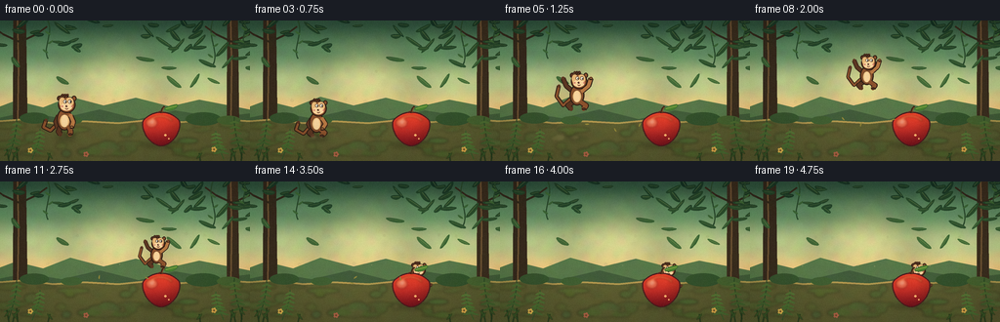
展开代码变化
--- 上一保存版本
+++ 本次保存版本
@@ -14,6 +14,7 @@
SS = 4
CW = WIDTH * SS
CH = HEIGHT * SS
+_BACKGROUND = None
def sc(value):
@@ -586,8 +587,10 @@
def render_frame(frame_index):
- rng = np.random.default_rng(7300 + frame_index * 17)
- canvas = draw_background(rng, frame_index)
+ global _BACKGROUND
+ if _BACKGROUND is None:
+ _BACKGROUND = draw_background(np.random.default_rng(7300), 0)
+ canvas = _BACKGROUND.copy()
state = frame_state(frame_index)
# The apple casts a grounded foreground shadow.
候选 03播放与检查图
点击播放 · 原生 RGB 像素

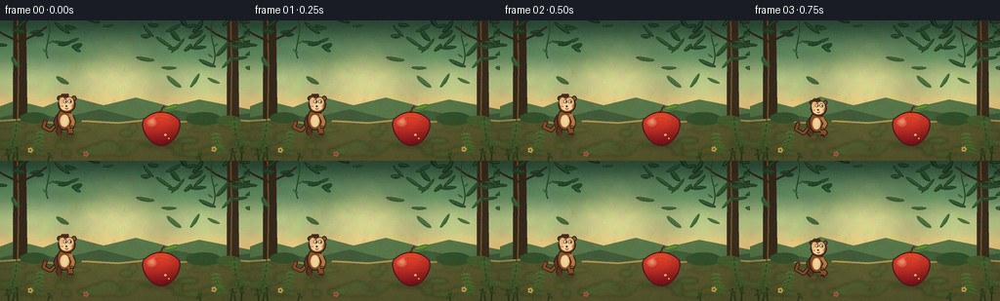
展开代码变化
--- 上一保存版本
+++ 本次保存版本
@@ -112,7 +112,7 @@
noise_array = np.asarray(noise).astype(np.float32) / 128.0
base = np.asarray(canvas).astype(np.float32)
base[:, :, :3] = np.clip(base[:, :, :3] * (0.92 + noise_array * 0.08), 0, 255)
- return Image.fromarray(np.uint8(base), "RGBA")
+ return Image.fromarray(np.uint8(base))
def draw_background(rng, frame_index):
@@ -443,7 +443,7 @@
grad[:, :, 0] = np.clip(grad[:, :, 0] * 1.04, 0, 255)
grad[:, :, 1] = np.clip(grad[:, :, 1] * 0.88, 0, 255)
body_rgba = Image.new("RGBA", (CW, CH), (0, 0, 0, 0))
- body_rgba.paste(Image.fromarray(np.uint8(grad), "RGB"), (x0, y0))
+ body_rgba.paste(Image.fromarray(np.uint8(grad)), (x0, y0))
body_rgba.putalpha(mask)
canvas.alpha_composite(body_rgba)
@@ -526,7 +526,7 @@
grain = rng.normal(0.0, 1.0, (HEIGHT, WIDTH, 1)).astype(np.float32)
grain = np.repeat(np.repeat(grain, SS, axis=0), SS, axis=1)
array[:, :, :3] += grain * 1.35
- return Image.fromarray(np.uint8(np.clip(array, 0, 255)), "RGBA")
+ return Image.fromarray(np.uint8(np.clip(array, 0, 255)))
def frame_state(frame_index):
@@ -556,11 +556,11 @@
u = (frame_index - 3.0) / 10.0
x = 68.0 + 103.0 * smoothstep(u)
y = 105.0 - 47.0 * math.sin(math.pi * u) - 2.0 * u
- scale = 0.86 - 0.18 * smoothstep(u)
+ scale = 0.86 - 0.13 * smoothstep(u)
pose = "jump" if frame_index < 12 else "land"
if frame_index == 13:
y = 103.0
- scale = 0.69
+ scale = 0.73
return {
"x": x,
"y": y,
@@ -577,7 +577,7 @@
return {
"x": 171.0,
"y": 103.0 + bob,
- "scale": 0.69 + 0.006 * math.sin(settle * 1.2),
+ "scale": 0.73 + 0.006 * math.sin(settle * 1.2),
"pose": "peek",
"shadow_x": 171.0,
"shadow_w": 17.0,
可观测工具轨迹
实际执行的命令与返回图片。
命令 1exit 0
/bin/bash -c "pwd && rg --files -g 'prompt.txt' -g 'GENERATION_RULES.md' -g 'task_spec.json' -g '"'!**/.git/**'"'"
命令 2exit 0
/bin/bash -c 'ls -la'
命令 3exit 0
/bin/bash -c "find . -maxdepth 2 -type f -printf '%p\\n' | sort | head -200"
命令 4exit 0
/bin/bash -c 'cat prompt.txt'
命令 5exit 0
/bin/bash -c 'cat GENERATION_RULES.md'
命令 6exit 0
/bin/bash -c 'cat task_spec.json'
命令 7exit 0
/bin/bash -c "sed -n '1,240p' artifact_io.py"
命令 8exit 1
/bin/bash -c 'python generate.py'
命令 9exit 0
/bin/bash -c 'python generate.py'
命令 10exit 0
/bin/bash -c "python - <<'PY'
from PIL import Image
from pathlib import Path
p=Path('frames')
for i in [0,3,6,9,12,15,19]:
im=Image.open(p/f'{i:02d}.png')
print(i, im.size, im.mode, im.getbbox())
PY"命令 11exit 0
/bin/bash -c "ls -lh pixels.npz index.html inspection.png transition_check.png frames/00.png frames/19.png && python - <<'PY'
import numpy as np
x=np.load('pixels.npz')['pixels']
print(x.shape, x.dtype, x.min(), x.max())
print('unique colors frame0', len(np.unique(x[...,0])))
PY"命令 12exit 0
/bin/bash -c "python - <<'PY'
from PIL import Image, ImageDraw
frames=[11,12,13,14,15,16,17,18,19]
w,h=256,144
sheet=Image.new('RGB',(w*3,(h+20)*3),(24,25,28))
d=ImageDraw.Draw(sheet)
for j,i in enumerate(frames):
x=(j%3)*w; y=(j//3)*(h+20)
d.text((x+4,y+3),f'{i:02d}',fill='white')
sheet.paste(Image.open(f'frames/{i:02d}.png'),(x,y+20))
sheet.resize((w*3, (h+20)*3), Image.Resampling.NEAREST).save('.tmp/landing_sheet.png')
PY"命令 13exit 0
/bin/bash -c "python - <<'PY'
from PIL import Image
import numpy as np
ims=[np.asarray(Image.open(f'frames/{i:02d}.png'),dtype=np.int16) for i in range(20)]
for i in range(19):
d=np.abs(ims[i+1]-ims[i])
print(f'{i:02d}->{i+1:02d}: mean={d.mean():.2f} changed={(d.max(2)>5).mean()*100:.1f}%')
PY"命令 14exit 0
/bin/bash -c "python generate.py && python - <<'PY'
from PIL import Image
import numpy as np
ims=[np.asarray(Image.open(f'frames/{i:02d}.png'),dtype=np.int16) for i in range(20)]
for i in range(19):
d=np.abs(ims[i+1]-ims[i])
print(f'{i:02d}->{i+1:02d}: mean={d.mean():.2f} changed={(d.max(2)>5).mean()*100:.1f}%')
PY"命令 15exit 0
/bin/bash -c "python - <<'PY'
from PIL import Image, ImageDraw
ids=list(range(20))
w,h=256,144
cols=5; rows=4
sheet=Image.new('RGB',(w*cols,(h+18)*rows),(23,25,27))
d=ImageDraw.Draw(sheet)
for j,i in enumerate(ids):
x=(j%cols)*w; y=(j//cols)*(h+18)
d.text((x+4,y+2),f'{i:02d} / {i/4:.2f}s',fill=(245,245,245))
sheet.paste(Image.open(f'frames/{i:02d}.png'),(x,y+18))
sheet.save('.tmp/all_frames.png')
PY"命令 16exit 0
/bin/bash -c 'rg -n "GIF|Video|mp4|webm|pixels.npz|frames" player_template.html | head -50'
命令 17exit 0
/bin/bash -c 'python generate.py'
命令 18exit 0
/bin/bash -c "python - <<'PY'
from pathlib import Path
import numpy as np, json, re
from PIL import Image
spec=json.loads(Path('task_spec.json').read_text())
p=np.load('pixels.npz')['pixels']
assert p.shape == (spec['height'],spec['width'],spec['frames'])
files=sorted(Path('frames').glob('*.png'))
assert len(files)==spec['frames']
for f in files:
im=Image.open(f); assert im.size==(spec['width'],spec['height']) and im.mode=='RGB'
html=Path('index.html').read_text()
assert '__DATA__' not in html and '__ID__' not in html and 'window.__pixelReady=true' in html
print('validated', p.shape, len(files), 'frames', Path('pixels.npz').stat().st_size, 'bytes npz', Path('index.html').stat().st_size, 'bytes html')
PY"视觉工具实际返回图片 1
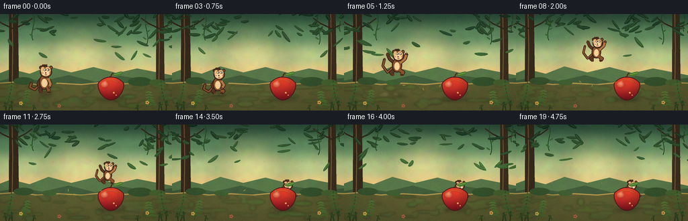
视觉工具实际返回图片 2
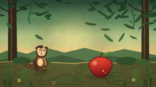
视觉工具实际返回图片 3
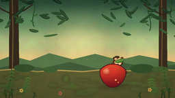
视觉工具实际返回图片 4
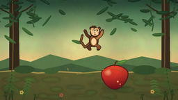
视觉工具实际返回图片 5
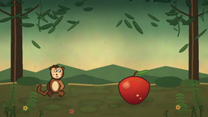
视觉工具实际返回图片 6
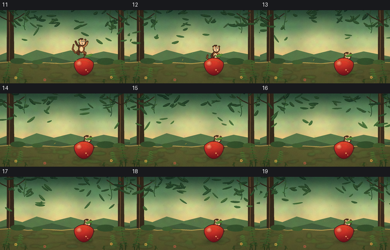
视觉工具实际返回图片 7

视觉工具实际返回图片 8

视觉工具实际返回图片 9
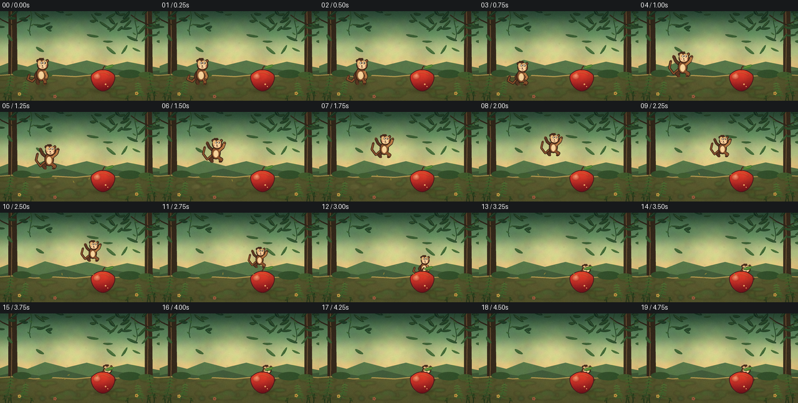
视觉工具实际返回图片 10
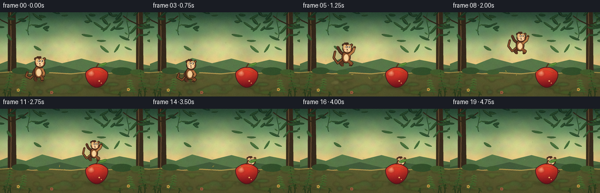
视觉工具实际返回图片 11
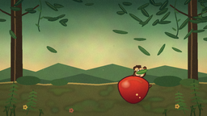
保存候选 3 份；完成命令 18 次；可验证图片返回 11 张。原始 API 响应与完整日志保留在本地。